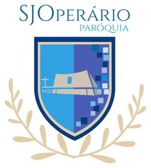

Projeção para a Missa, simples e feita para a liturgia católica
O MiguelAngelus é um aplicativo para Windows que a equipe de comunicação (PASCOM) usa para projetar a Missa no telão: lê o folheto da semana e monta o roteiro com cantos, leituras, salmo, orações e avisos.
📄 Roteiro a partir do folheto
Lê o folheto da Missa (PDF, Word ou texto) e monta o roteiro inteiro, com as falas do padre e do povo.
🎵 Cantos e orações
Banco de cantos da paróquia organizado por momento da Missa, e orações por categoria.
📖 Bíblia e liturgia do dia
Bíblia católica com 73 livros, calendário litúrgico e as leituras das Missas de semana.
🎬 Vídeos, áudios e câmeras
Toca vídeos e áudios das pastas do computador e mostra câmeras ao vivo no telão.
📡 Transmissão
Envia a faixa com as letras para o OBS, por cima da câmera da transmissão.
☁ Vários computadores
Opcionalmente, guarda roteiros e cantos no Google Drive da própria paróquia para usar em outras capelas.
Sobre o projeto
Miguel + Angelus ("anjo", em latim): o nome é uma homenagem ao Miguel, que idealizou e criou esse projeto, e a São Miguel Arcanjo, cuja festa foi na semana em que o programa nasceu. O MiguelAngelus é gratuito e foi feito para uso da Paróquia São José Operário (Rio de Janeiro) e de suas capelas.
Ele funciona no próprio computador, sem servidor. Quando a sincronização com o Google Drive está ligada, os arquivos ficam no Drive da conta da paróquia; ninguém mais tem acesso a eles. Veja a política de privacidade.
O código do MiguelAngelus é aberto (licença MIT) e está no GitHub: github.com/dobylucky78-droid/miguelangelus.
Contato: pascom.sjo.holyrics@gmail.com
